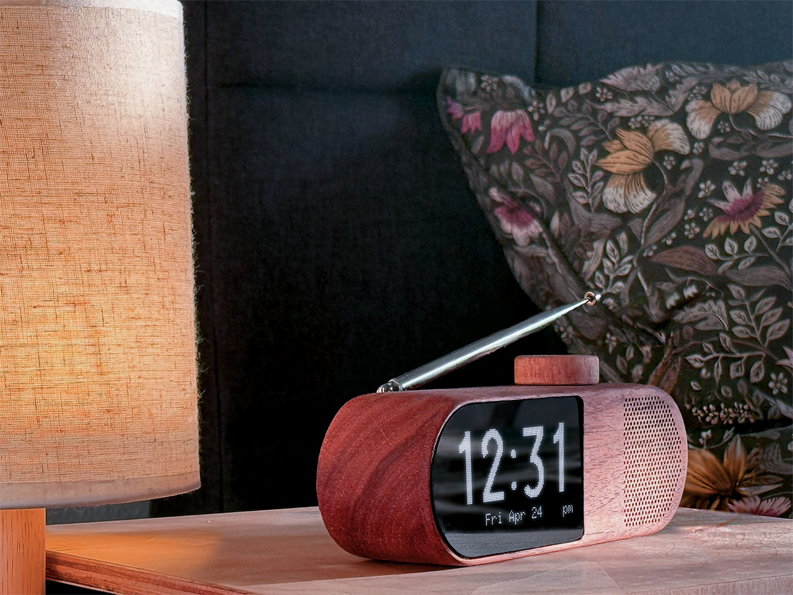
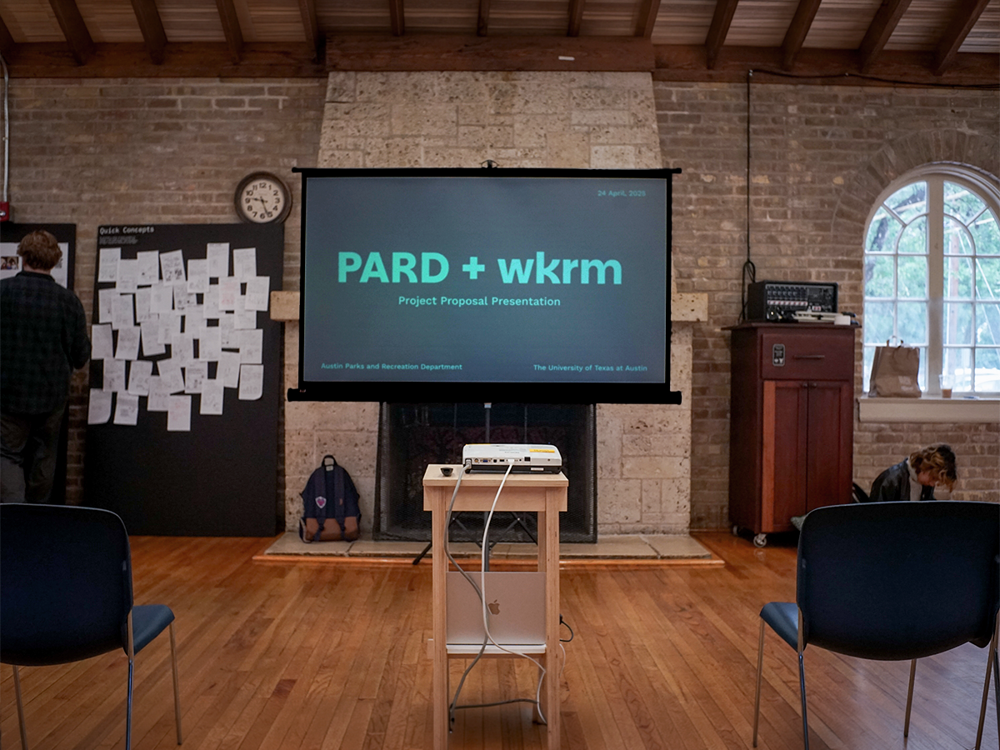
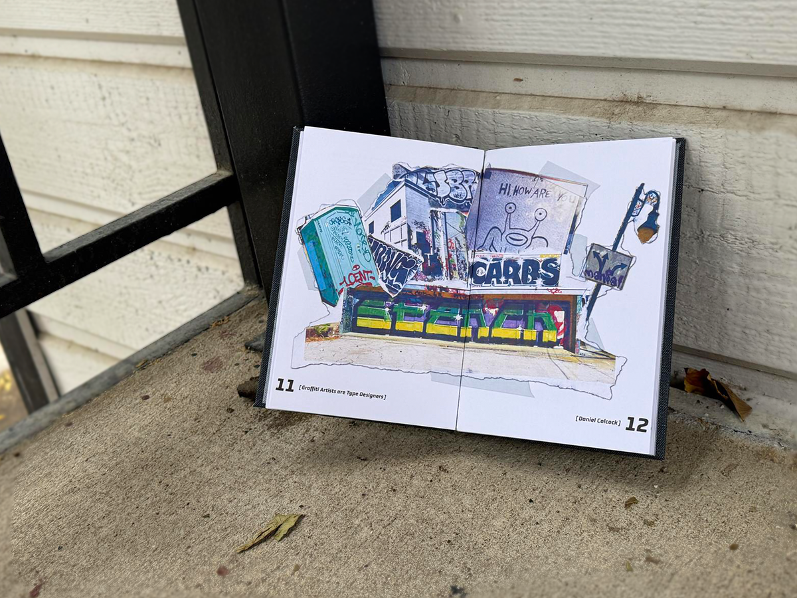

Daniel Colcock
Product Designer
2026 design portfolio
Scroll to Continue→
Product Designer
2026 design portfolio
Seeking full time roles in product design.
Dawn is a wooden clock radio that replaces the smartphone on your nightstand. Waking you with local community radio, controlled entirely through a single dial.

Design research for the Austin Parks & Recreation department that surfaced volunteer coordination breakdowns across divisions. Proposed↗ digital, physical, and community-facing solutions to key stakeholders.

A handbound editorial book↗ exploring how graffiti artists and type designers share the same iterative process of critique, form development, and letterform mastery. Features torn-image layouts, acrylic-painted covers, and screw-post binding.
